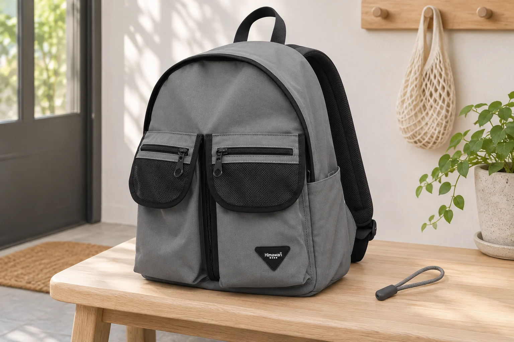
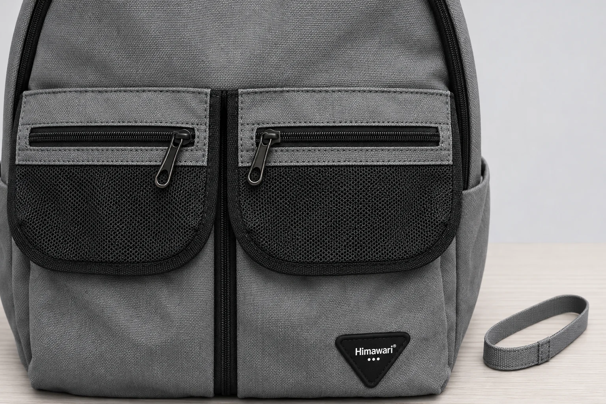

백팩 지퍼 손잡이에 고리를 덧달아도 될까

지퍼 손잡이를 집으려는데 손끝이 자꾸 미끄러지면 작은 고리를 하나 달고 싶어집니다. 고리가 길어지면 잡을 곳도 길어 보입니다. 다만 연장 부품의 사진에 나온 연결 방식이 내 가방에서도 가능한지는 별도로 살펴야 합니다. 가방에 원래 달린 손잡이를 그대로 둔 채 연결할 수 있는지, 새 부품이 지퍼를 여닫는 길에 놓이는지가 구매 전에 남길 질문입니다.
No.1230 그레이의 실제 상품 사진에는 검은 지퍼가 달린 앞쪽 덮개와 길게 내려온 두 포켓이 보입니다. 본체의 둥근 테두리를 따라가는 검은 선도 구분됩니다. 공개 외부 크기는 가로 32 × 세로 40 × 폭 18cm입니다. 이 숫자에는 지퍼 손잡이 구멍의 너비나 연장 부품의 호환 규격이 들어 있지 않습니다. 사진 속 작은 부품을 확대해 보는 일과 실제 장착을 확인하는 일을 나누어 생각해 봅니다.
잡기 어려운 곳이 손잡이일까, 지퍼가 놓인 자리일까
앞 포켓을 열려다가 위쪽 입구의 손잡이를 먼저 집었다면 길이보다 위치를 헷갈린 상황입니다. 두 손잡이 사이에서 어느 쪽을 잡아야 하는지 찾는 데 시간이 걸린 것인지, 원하는 손잡이를 찾았어도 손가락으로 집기 어려운 것인지부터 구별해 보세요. 원인이 다르면 연장 고리가 필요한 이유도 달라집니다. 처음 보는 가방이라면 앞면의 지퍼 선을 따라가며 원하는 입구를 먼저 확인할 수 있습니다.
가방을 내려놓았을 때는 잘 잡히는데 어깨에 멘 상태에서만 어렵다면 손이 들어가는 방향을 봅니다. 본체를 돌려 앞에 두고 사용할 때도 같은지, 겉옷 소매가 손잡이를 가리는지 확인해 볼 만합니다. 한 동작에서 불편했다고 모든 지퍼에 같은 고리를 달 필요는 없습니다. 자주 여는 포켓 하나와 그 포켓을 실제로 사용하는 자세를 정하면 살필 범위가 좁아집니다.
움직임이 매끄럽지 않아서 손잡이를 세게 당기고 있던 경우에는 연장 부품을 고르는 일을 잠시 미룹니다. 지퍼가 멈추는 원인과 잡을 곳이 작은 문제는 각각 확인해야 합니다. 새 고리를 달아 더 힘주어 당기는 방식으로 해결하려고 하지 말고 내용물과 여밈 주변을 살핀 뒤 제품의 사용 안내를 확인합니다. 상담할 때도 어느 위치에서 어떤 동작이 어려웠는지 적는 편이 구체적입니다.

손잡이 구멍에 들어가면 호환된다는 뜻일까
연장 부품을 고를 때는 연결부가 닫힌 고리인지, 끈을 통과시켜 묶는 방식인지 먼저 봅니다. 부품 이름이 같아도 가방에 연결하는 과정은 다를 수 있습니다. 손잡이에 보이는 틈 하나만으로 장착 가능 여부를 판단하기 어렵습니다. 연장 부품의 설명에서 필요한 연결 공간과 권장 대상을 확인하고 실제 손잡이의 형태와 비교할 자료가 있어야 합니다.
사진의 확대 배율을 이용해 구멍 크기를 재지는 않습니다. No.1230의 본체 가로가 32cm라는 사양을 사진의 픽셀 수에 대입해 작은 구멍의 실측을 얻는 방식도 피합니다. 몸판과 손잡이가 카메라에서 같은 거리에 있지 않을 수 있고 촬영 각도도 다르기 때문입니다. 치수가 필요한 구매라면 판매자에게 구멍과 연장 부품 연결부의 실제 수치를 문의하는 편이 정확합니다.
원래 손잡이를 떼거나 금속 부위를 벌려야 들어가는 부품이라면 간단히 덧다는 작업으로 볼 수 없습니다. 사용자가 다룰 수 있는 범위인지 해당 제품의 안내부터 확인해야 합니다. 가방과 연장 부품 양쪽에서 장착 방법을 확인하지 못했다면 임의로 부품을 변형하지 않습니다. 원래 상태의 사진을 보내 연결 방법을 물어보는 데서 멈출 수 있습니다.

길어진 고리는 가방의 어디를 지나갈까
장착 방법이 확인된 뒤에도 길이만 보고 선택할 수는 없습니다. 앞 포켓을 닫은 위치에서 고리 끝이 아래 포켓이나 가운데 검은 띠에 닿는지, 옆으로 옮기면 다른 지퍼 손잡이와 겹치는지 볼 필요가 있습니다. 이때는 장식이 예쁘게 매달리는 한 장면보다 손으로 잡고 여는 동안 고리가 움직이는 범위를 확인합니다. 다른 포켓의 여밈과 나란히 있을 때도 어느 입구의 고리인지 알아볼 수 있어야 합니다.
사진처럼 지퍼가 가로로 놓인 부분에서는 닫아 둔 위치에 따라 고리가 내려오는 자리도 달라집니다. 가운데에서 보기 좋았던 길이를 포켓 끝에서도 같은 느낌일 것으로 단정하기 어렵습니다. 실제 사용에서 가방을 책상에 세우거나 무릎에 놓는다면 그 자세에서 주변 천과 닿는 곳을 살펴봅니다. 사용 안내가 허용한 범위에서 확인하고 연결부가 원래 위치를 벗어나 보이면 사용을 멈추고 문의합니다.
무거운 장식을 한꺼번에 이어 달 계획이라면 연장 고리를 잡기 쉽게 만드는 목적부터 다시 정해 보세요. 잡을 면을 더하는 일과 장식의 수를 늘리는 일은 요구하는 조건이 다릅니다. 해당 지퍼가 추가 장식의 무게를 어느 정도 견딘다는 자료는 여기서 확인하지 못했습니다. 임의의 무게 기준을 만들기보다 지퍼 손잡이와 연결 부품의 권장 사용 범위를 각각 확인합니다.
주문 전에 남길 사진과 질문
문의 사진은 가방 전체 한 장과 해당 손잡이를 가까이 찍은 한 장이면 시작하기 좋습니다. 전체에서는 어느 입구를 쓰려는지 표시하고 근접 사진에서는 구멍과 연결 부위가 가려지지 않게 합니다. 함께 고른 연장 부품의 연결 방식도 보냅니다. 손잡이를 교체하고 싶은지, 원래 손잡이에 끈을 더하고 싶은지 적으면 서로 다른 작업을 혼동할 여지가 줄어듭니다.
No.1230의 사진은 손잡이와 포켓의 위치를 살피는 자료입니다. 이 글의 연출 사진에 놓인 별도 고리는 호환을 확인한 판매 구성품이 아닙니다. 실제로 고리를 달아 본 결과나 지퍼 수명이 달라진다는 뜻으로 읽지 않아야 합니다. 원하는 포켓의 위치, 연결 방법, 여닫는 동안 고리가 지나갈 길을 확인한 뒤 내 가방에서 바꿀 부분을 정합니다.